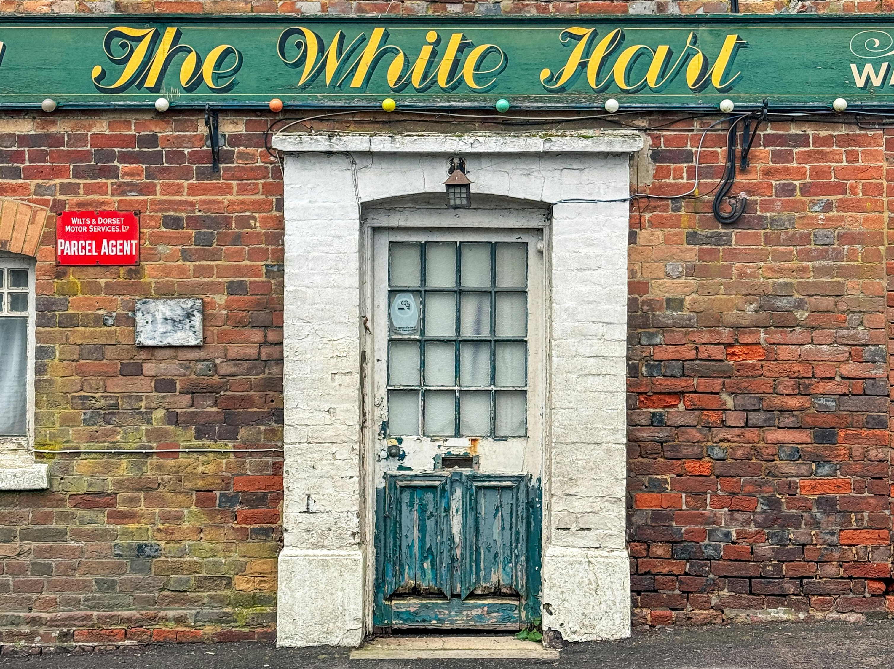

Last year a symbolic story emerged from English and Welsh high streets - in 2025, an average of one pub per day closed permanently. According to analyses of government statistics 366 pubs were either demolished or repurposed, reducing the total from 38,989 to 38,623 over the year. This trend points to underlying pressures on small businesses, changing social patterns and policy choices that have failed to protect community assets and third spaces.
Pubs aren’t just places to drink, they are venues for our social lives, cultural expression, employment and local identity. For many towns and villages the local pub is a place of community meetings, quiz nights, gigs, charity fundraisers, romantic encounters and spontaneous friendships. When these spaces vanish so too does a piece of the social fabric that knits our neighbourhoods together.
Worryingly the data shows that pubs aren’t just shutting temporarily. Nearly all of them are being demolished or converted to uses far removed from their original purpose, such as offices or housing, making their return unlikely. Industry specialists warn that without pub‑specific tax support and structural relief the downward trend could continue.
These pub closures illustrate the limitations of market‑first profit-driven thinking in preserving everyday life. To preserve them we need to champion a number of different approaches.
Firstly we need targeted tax relief and business support, mainly around reducing business rates and property tax burdens specifically for pubs and similar community‑focused small enterprises, rather than across‑the‑board cuts that disproportionately benefit large multinational chains.
We also need more use of local and cooperative ownership models to encourage community ownership where locals hold shares or trusts take over at‑risk pubs. The community itself can keep these spaces alive and accountable to their needs even if they aren’t ‘profitable’ enough for corporate investors. I have some experience of this model as I have been one of the community owners of The Bell in Bath since 2013, one of the most significant and successful community pub buy-outs in the UK. It’s a model that has been proven to work and keeps these vital spaces open.
Finally we need to strengthen social infrastructure and see pubs as part of the public sphere, much like libraries, parks and community centres. They perform a vital cohesive role that merits protection and investment, not just profit. We need to make it normal for councils and planners to hold a belief that this contribution to the health of communities is an economic priority, not a cultural luxury.
The persistent decline of pubs didn’t happen in a vacuum. Under our previous governments going back at least twenty years, pubs have faced a number of challenges including rising business rates and energy costs without sufficient targeted relief, property tax recalculations slated for 2026, expected to raise costs further for pub landlords, and ‘austerity’ in local authority funding reducing councils’ capacity to offer bespoke support. While the government has touted a £4.3bn support package aimed at easing pressures on pubs and hospitality it is arguably too blunt and too small to reverse closures at today’s scale.
The significant and continuing losses of pubs in 2025 should be a wake‑up call invites reflection on what we value as a society, how we should shape economic policy and whether communities should be left to the mercy of broad market trends based on property values and short term profits. Pubs represent belonging, connection, cohesion and our shared lives across everyone in a community regardless of age, race, background and political views. As we see division being stoked for political gain it is more important than ever that we maintain these shared spaces where people can socialise and meet others outside their own online ‘bubbles’. Protecting them means choosing policies that put people and place before profit.